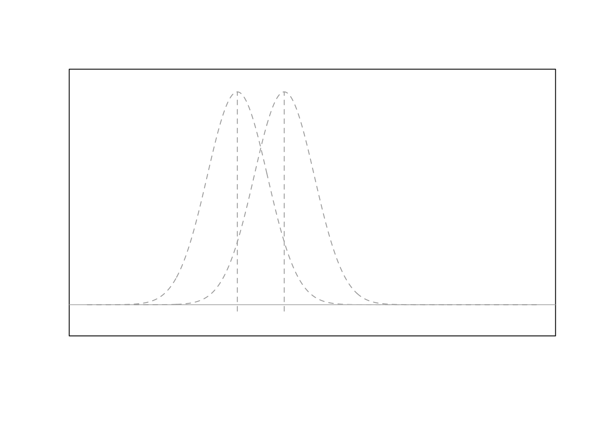
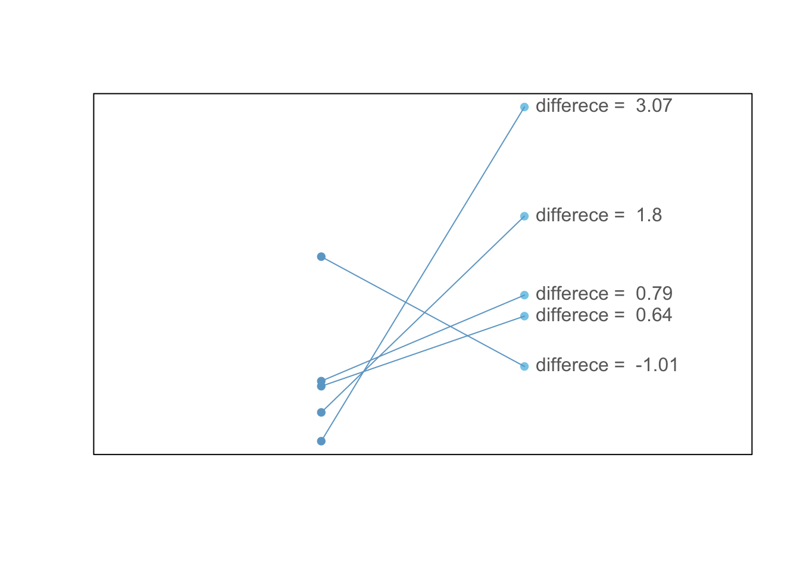
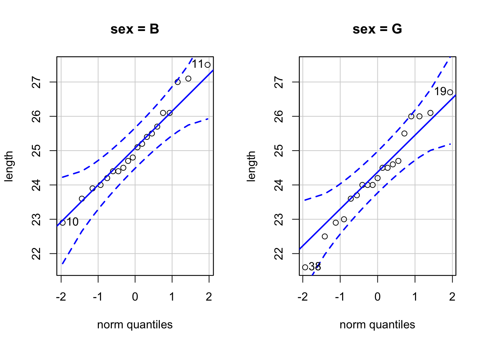
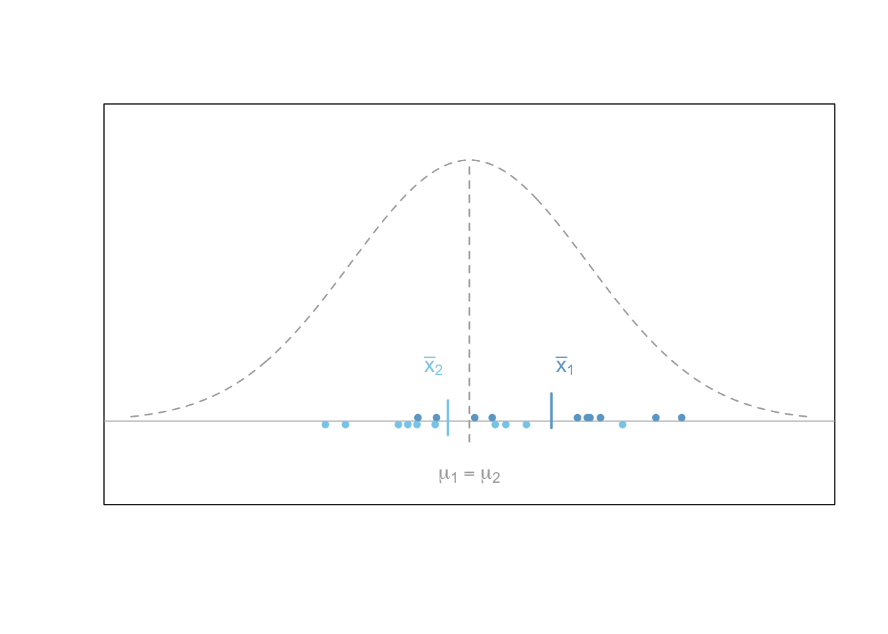

t Tests
Much of statistical inference concerns the location of the population mean \(\mu\) for a given parametric distribution. Some of the most common approaches to making inference about \(\mu\) utilize a test statistic that follows a t distribution.
One Sample t Test

A one sample t test is used when there is a hypothesized value for the population mean \(\mu\) of a single quantitative variable.
Overview
This test is only appropriate when both of the following are satisfied.
The sample is representative of the population. (Having a simple random sample is the best way to do this.)
The sampling distribution of the sample mean \(\bar{x}\) can be assumed to be normal. This is a safe assumption when either (a) the population data can be assumed to be normally distributed using a Q-Q Plot or (b) the size of the sample (n) that was taken from the population is large (at least n > 30, but “large” really depends on how badly the data is skewed).
Hypotheses
\(H_0: \mu = \text{some number}\)
\(H_a: \mu \ \left\{\underset{<}{\stackrel{>}{\neq}}\right\} \ \text{some number}\)
Examples: sleepOne
R Instructions
Console Help Command: ?t.test()
t.test(NameOfYourData$Y, mu = YourNull, alternative = YourAlternative, conf.level = 0.95)
NameOfYourDatais the name of your data set, likemtcarsorKidsFeet.Ymust be a “numeric” vector of quantitative data.YourNullis the numeric value from your null hypothesis for \(\mu\).YourAlternativeis one of the three options:"two.sided","greater","less"and should correspond to your alternative hypothesis.- The value for
conf.level = 0.95can be changed to any desired confidence level, like 0.90 or 0.99. It should correspond to \(1-\alpha\).
Testing Assumptions
library(car)
qqPlot(NameOfYourData$Y)
Example Code
Hover your mouse over the example codes to learn more.
t.test( ‘t.test’
is an R function that performs one and two sample t-tests.
mtcars ‘mtcars’ is a dataset. Type ‘View(mtcars)’ in R to
view the dataset. $ The $ allows us to access any variable from the
mtcars dataset. mpg, ‘mpg’ is Y, a quantitative variable (numeric
vector) from the mtcars dataset.
mu = 20, The numeric value from the null
hypothesis is 20 meaning \(\mu=20\).
alternative = “two.sided”, The alternative hypothesis is “two.sided” meaning
the alternative hypothesis is \(\mu\neq20\). conf.level = 0.95) This
test has a 0.95 confidence level which corresponds to 1−α.
Press Enter to run the code if you have typed
it in yourself. You can also click here to view the output.
Click to Show Output Click to View
Output.
qqPlot( ‘qqPlot’ is a R function from library(car) that creates a qqPlot. mtcars ‘mtcars’ is a dataset. Type ‘View(mtcars)’ in R to view the dataset. $ The $ allows us to access any variable from the mtcars dataset. mpg) ‘mpg’ is a quantitative variable (numeric vector) from the mtcars dataset. Click to Show Output Click to View Output.
Explanation
In many cases where it is of interest to test a claim about a single population mean \(\mu\), the one sample t test is used. This is an appropriate decision whenever the sampling distribution of the sample mean can be assumed to be normal and the data represents a simple random sample from the population.
In the figure below, the null hypothesis \(H_0: \mu = \mu_0\) is represented by the normal distribution (gray) centered at \(\mu_0\). Note that \(\mu_0\) is just some specified number. This shows how the null hypothesis represents the assumption about the center of the distribution of the data.
After a hypothesis (null) is established and an alternative hypothesis similarly declared, a simple random sample of data of size \(n\) is obtained from the population of interest. In the plot above, this is depicted by the points (blue dots) which are centered around their sample mean \(\bar{x}\).
Above the points (blue dots) is shown a second normal distribution (blue dashed line) which represents the idea that the alternative hypothesis allows for a normal distribution which is potentially more consistent with the data than the one specified under the null hypothesis.
The role of the one sample t test is to measure the probability of a
sample mean being as extreme or more extreme from the hypothesized value
of \(\mu_0\) than the one observed
assuming the null hypothesis is true. This probability is of course the
p-value of the test. This works because the sampling distribution of the
sample mean has been assumed to be normal. In this case, the
distribution of the test statistic t, \[
t = \frac{\bar{x}-\mu}{s/\sqrt{n}}
\]
is known to follow a t distribution with \(n-1\) degrees of freedom. (The mathematics
that provide this result are phenominal! You can consult any advanced
statistical textbook for the details.)
The p-value of the one sample t test represents the probability that the test statistic \(t\) is as extreme or more extreme than the one observed according to a t-distribution with \(n-1\) degrees of freedom.
If the probability (the p-value) is close enough to zero (smaller than \(\alpha\)) then it is determined that the most plausible hypothesis is the alternative hypothesis, and thus the null is “rejected” in favor of the alternative.
Paired Samples t Test
The paired samples t test is used when a value is hypothesized for the popluation mean of the differences, \(\mu_d\), obtained from paired observations.
Overview
Paired samples include pre-test post-test scenarios and matched-pairs scenarios, where the only interest is in the difference between the two scores. Such scenarios begin with two sets of measurements for each individual (or each matched-pair). However, in the end, these two measurements are reduced to a single set of “differences”. Thus, paired data is essentially one sample of differences.
Requirements
The test is only appropriate when both of the following are satisfied.
The sample of differences is representative of the population differences.
The sampling distribution of the sample mean of the differences \(\bar{d}\) (\(\bar{x}\) of the differences) can be assumed to be normal. (This second requirement can be assumed to be satisfied when (a) the differences themselves can be assumed to be normal from a Q-Q Plot, or (b) when the sample size \(n\) of the differences is large.)
Hypotheses
\(H_0: \mu_d = \text{some number, but
typically 0}\)
\(H_a: \mu_d \
\left\{\underset{<}{\stackrel{>}{\neq}}\right\} \ \text{some
number, but typically 0}\)
Examples: sleepPaired studentPaired
R Instructions
Console Help Command: ?t.test()
Option 1:
t.test(NameOfYourData$Y1, NameOfYourData$Y2, paired = TRUE, mu = YourNull, alternative = YourAlternative, conf.level = 0.95)
NameOfYourDatais the name of your data set likesleepormtcarsorKidsFeet.Y1must be a “numeric” vector that represents the quantitative data from the first sample of data.Y2must be a “numeric” vector that represents the quantitative data from the second sample of data. This vector must be in the same order as the first sample so that the pairing can take place.YourNullis the numeric value from your null hypothesis for \(\mu_d\).YourAlternativeis one of the three options:"two.sided","greater","less"and should correspond to your alternative hypothesis.- The value for
conf.level = 0.95can be changed to any desired confidence level, like 0.90 or 0.99. It should correspond to \(1-\alpha\).
Testing Assumptions
library(car)
qqPlot(Y1 - Y2)
Example Code
Hover your mouse over the example codes to learn more.
sleep1 <- filter(sleep, group==1) This splits out the “group1” data from the sleep
data set.
sleep2 <-
filter(sleep, group==2) This splits out the
“group2” data from the sleep data set
t.test( ‘t.test’ is an R
function that performs one and two sample t-tests. sleep2$extra, A numeric
vector that represents the hours of extra sleep that the group had with
drug 2. sleep1$extra, A numeric vector that represents the hours of extra
sleep that the same group had with drug 1.
paired=TRUE, Indicates
that this is a paired t-Test. This will cause the subtraction of
sleep2$extra - sleep1$extra to be performed to obtain the paired
differences. To cause the subtraction to occur in the other order,
reverse the order sleep1$extra, sleep2$extra occur in the t.test(…)
function. mu = 0, The numeric value from the null hypothesis 0
meaning the null hypothesis is \(\mu_d=0\). alternative = “two.sided”, The alternative hypothesis is “two.sided” meaning
the alternative hypothesis is \(\mu_d\neq0\). conf.level = 0.95) This
test has a 0.95 confidence level which corresponds to 1 - \(\alpha\).
Press Enter to run the code if you have typed
it in yourself. You can also click here to view the output.
Click to Show Output Click to View
Output.
qqPlot( ‘qqPlot’ is a R function from library(car) that creates a qqPlot. sleep2$extra The hours of extra sleep that the group had with drug 2. - Subtract the hours of extra sleep with drug 1 from the hours of extra sleep with drug 2 to get the difference. sleep1$extra The hours of extra sleep that the same group had with drug 1. ) Closing parenthesis for qqPlot(…) function. Click to Show Output Click to View Output.
Option 2:
Compute the differences yourself instead of using
paired=TRUE.
differences = NameOfYourData$Y1 - NameOfYourData$Y2
t.test(differences, mu = YourNull, alternative = YourAlternative, conf.level = 0.95)
NameOfYourDatais the name of your data set.Y1must be a “numeric” vector that represents the quantitative data from the first sample of data.Y2must be a “numeric” vector that represents the quantitative data from the second sample of data. This vector must be in the same order as the first sample so that the pairing can take place.differencesare the resulting differences obtained from subtractingY1 - Y2.YourNullis the numeric value from your null hypothesis for \(\mu_d\).YourAlternativeis one of the three options:"two.sided","greater","less"and should correspond to your alternative hypothesis.- The value for
conf.level = 0.95can be changed to any desired confidence level, like 0.90 or 0.99. It should correspond to \(1-\alpha\).
Testing Assumptions
library(car)
qqPlot(differences)
Example Code
Hover your mouse over the example codes to learn more.
sleep1 <- filter(sleep, group==1) This splits out the “group1” data from the sleep
data set.
sleep2 <-
filter(sleep, group==2) This splits out the
“group2” data from the sleep data set
differences <- Saved
the computed differences to an object called ‘differences’.
sleep2$extra The hours of extra sleep that the group had with
drug 2. - Subtract the hours of extra sleep with drug 1 from
the hours of extra sleep with drug 2 to get the difference.
sleep1$extra The hours of extra sleep that the same group had
with drug 1.
t.test( ‘t.test’ is an R function that performs one and two
sample t-tests. differences,
‘differences’ are the resulting differences
of the hours of extra sleep with drug 1 and the hours of extra sleep
with drug 2. mu = 0, The numeric value from the null hypothesis 0
meaning the null hypothesis is \(\mu_d=0\). alternative = “two.sided”, The alternative hypothesis is “two.sided” meaning
the alternative hypothesis is \(\mu_d\neq0\). conf.level = 0.95) This
test has a 0.95 confidence level which corresponds to 1 - \(\alpha\).
Press Enter to run the code if you have typed
it in yourself. You can also click here to view the output.
Click to Show Output Click to View
Output.
qqPlot( ‘qqPlot’ is a R function from library(car) that creates a qqPlot. differences) ‘differences’ are the resulting differences of the hours of extra sleep with drug 1 and the hours of extra sleep with drug 2. Click to Show Output Click to View Output.
Explanation
The paired samples t test considers the single mean of all the differences from the paired values. Thus, the paired samples t test essentially becomes a one sample t test on the differences between paired observations. Hence the requirement is that the sampling distribution of the sample mean of the differences, \(\bar{d}\), can be assumed to be normally distributed. (It is also required that the obtained differences represent a simple random sample of the full population of possible differences.)
The paired samples t test is similar to the independent samples t test scenario, except that there is extra information that allows values from one sample to be paired with a value from the other sample. This pairing of values allows for a more direct analysis of the change or difference individuals experience between the two samples.
The points in the plot below demonstrate how points are paired together, and the only thing of interest are the differences between the paired points.

Independent Samples t Test

The independent samples t test is used when a value is hypothesized for the difference between two (possibly) different population means, \(\mu_1 - \mu_2\).
Overview
The test is only appropriate when both of the following are satisfied.
Both samples are representative of the population. (Simple random samples are the best way to do this.)
The sampling distribution of the difference of the sample means \((\bar{x}_1 - \bar{x}_2)\) can be assumed to be normal. (This is a safe assumption when the sample size of each group is \(30\) or greater or when the population data from each group can be assumed to be normal with a Q-Q Plot.)
Hypotheses
\(H_0: \mu_1 - \mu_2 = \text{some number, but typically 0}\)
\(H_a: \mu_1 - \mu_2 \ \left\{\underset{<}{\stackrel{>}{\neq}}\right\} \ \text{some number, but typically 0}\)
R Instructions
Console Help Command: ?t.test()
There are two ways to perform the test.
Option 1:
t.test(Y ~ X, data = YourData, mu = YourNull, alternative = YourAlternative, conf.level = 0.95)
Ymust be a “numeric” vector fromYourDatathat represents the data for both samples.Xmust be a “factor” or “character” vector fromYourDatathat represents the group assignment for each observation. There can only be two groups specified in this column of data.YourNullis the numeric value from your null hypothesis for \(\mu_1-\mu_2\).YourAlternativeis one of the three options:"two.sided","greater","less"and should correspond to your alternative hypothesis.- The value for
conf.level = 0.95can be changed to any desired confidence level, like 0.90 or 0.99. It should correspond to \(1-\alpha\).
Testing Assumptions
library(car)
qqPlot(Y ~ X, data=YourData)
Example Code
Hover your mouse over the example codes to learn more.
t.test( ‘t.test’
is an R function that performs one and two sample t-tests.
length ‘length’ is a quantitative variable (numeric
vector). ~ ‘~’ is the tilde symbol. sex, ‘sex’ is a ‘factor’
or ‘character’ vector that represents the group assignment for each
observation. There are two groups.
data=KidsFeet, ‘KidsFeet’ is a dataset in
library(mosaic). Type View(KidsFeet) to view it. mu = 0, The numeric value
from the null hypothesis for μ1-μ2 is 0 meaning the null hypothesis is
\(\mu1-\mu2 = 0\) alternative = “two.sided”, The alternative is “two-sided” meaning the
alternative hypothesis is \(\mu1-\mu2 \neq
0\). conf.level = 0.95)
This test has a 0.95 confidence level which
corresponds to \(1-\alpha\)
Press Enter to run the code if you have typed
it in yourself. You can also click here to view the output.
Click to Show Output Click to View
Output.
qqPlot( ‘qqPlot’ is a R function from library(car) that creates a qqPlot. length ‘length’ is a quantitative variable (numeric vector). ~ ‘~’ is the tilde symbol. sex, ‘sex’ is a “factor” or “character” vector that represents the group assignment for each observation. There are two groups. data=KidsFeet) ‘KidsFeet’ is a dataset in library(mosaic). Type View(KidsFeet) to view it. Click to Show Output Click to View Output.
Option 2:
t.test(NameOfYourData$Y1, NameOfYourData$Y2, mu = YourNull, alternative = YourAlternative, conf.level = 0.95)
NameOfYourDatais the name of your data set.Y1must be a “numeric” vector that represents the quantitative data from the first sample.Y2must be a “numeric” vector that represents the quantitative data from the second sample.YourNullis the numeric value from your null hypothesis for the difference of \(\mu_1-\mu_2\). This is typically zero.YourAlternativeis one of the three options:"two.sided","greater","less"and should correspond to your alternative hypothesis.- The value for
conf.level = 0.95can be changed to any desired confidence level, like 0.90 or 0.99. It should correspond to \(1-\alpha\).
Testing Assumptions
library(car)
par(mfrow=c(1,2))
qqPlot(NameOfYourData$Y1)
qqPlot(NameOfYourData$Y2)
Example Code
Hover your mouse over the example codes to learn more.
t.test( ‘t.test’
is an R function that performs one and two sample t-tests.
KidsFeet$length[KidsFeet$sex == “B”],
A numeric vector that represents the
quantitative data or the foot length for the first sample of data which
in this case is the boys.
KidsFeet$length[KidsFeet$sex == “G”], A
numeric vector that represents the quantitative data or the foot length
for the second sample of data which in this case is the girls.
mu = 0, The
numeric value from the null hypothesis for μ1-μ2 is 0 meaning the null
hypothesis is \(\mu1-\mu2 = 0\)
alternative = “two.sided”, The alternative is “two-sided” meaning the
alternative hypothesis is \(\mu1-\mu2 \neq
0\). conf.level = 0.95)
This test has a 0.95 confidence level which
corresponds to \(1-\alpha\)
Press Enter to run the code if you have typed
it in yourself. You can also click here to view the output.
… Click to View Output.
par( ‘par’ is a R
function that can be used to set or query graphical parameters.
mfrow=c(1,2)) Parameter is being set. The first item inside the
combine function c() is the number of rows and the second is the number
of columns.
qqPlot( ‘qqPlot’ is a R function from library(car) that
creates a qqPlot.
KidsFeet$length[KidsFeet$sex == “B”]) A
numeric vector that represents the quantitative data or the foot length
for the first sample of data which in this case is the boys.
qqPlot( ‘qqPlot’ is a R function from library(car) that
creates a qqPlot.
KidsFeet$length[KidsFeet$sex == “G”]) A
numeric vector that represents the quantitative data or the foot length
for the second sample of data which in this case is the girls.
… Click to View Output.
Explanation
The first figure below depicts the scenario where the difference in means of two separate normal distributions is non-zero. In other words, the two distributions have different means, \(\mu_1\) and \(\mu_2\), respectively. It is worth emphasizing that the values of \(\mu_1\) and \(\mu_2\) are unknown to the researcher. The only thing observed are two separate samples of data (blue dots) of sizes \(n_1\) and \(n_2\), respectively. For the scenario depicted, the null hypothesis that \(H_0: \mu_1 - \mu_2 = 0\) (i.e., that \(\mu_1=\mu_2\)) is rejected in favor of the alternative that \(H_a: \mu_1 - \mu_2 \neq 0\) based on the sample data observed. This dicision would be correct as the true difference in means, \(\mu_1-\mu_2\) is non-zero in this case.

When the null hypothesis is true, that \(H_0: \mu_1 - \mu_2 = 0\), then it follows that the test statistic \(t\) that is obtained by measuring the distance between the two sample means, \(\bar{x}_1-\bar{x}_2\), and appropriately standardizing the result follows a \(t\) distribution with degrees of freedom less than or equal to \(n_1+n_2-2\). Thus, the \(p\)-value of the independent samples \(t\) test is obtained by using this \(t\) distribution to calculate the probability of a test statistic \(t\) being as extreme or more extreme than the one observed assuming the null hypothesis is true. \[ t = \frac{(\bar{x}_1 - \bar{x}_2) - (\mu_1 - \mu_2)}{\sqrt{s_1/n_1+s_2/n_2 }} \]
The plot below demonstrates what data might look like when the null hypothesis is actually true. In other words, when both samples come from the same distribution.
